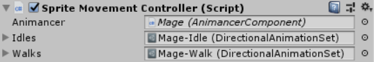
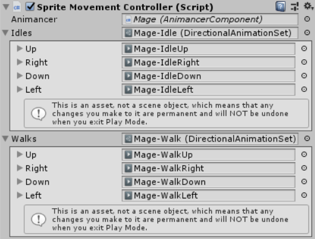

Difficulty: Beginner
Location: Assets/Plugins/Animancer/Examples/04 Directional Sprites/01 Basic Movement
Namespace:
Animancer.Examples.DirectionalSprites
This example demonstrates how you can use DirectionalAnimationSets to organise animations in groups of up/right/down/left, using the exact same structure for both Idle and Walk animations across various different characters. The Character Controller example extends this concept into a more complex character and shows an alternate character that uses DirectionalAnimationSet8s to allow diagonal movement without making any changes to the example script. This is one of the major advantages Animancer has over Mecanim: you can define reusable data structures to suit your needs instead of trying to manually duplicate a particular pattern in an Animator Controller and being unable to easily refactor or extend what you have made.
Also note that DirectionalAnimationSets are not limited to only Sprite animations. The Directional Blending example originally used a set for its movement animations before Transitions were implemented.

The SpriteMovementController script looks like this (with the comments removed since we're about to explain how it works):
using Animancer;
using UnityEngine;
public sealed class SpriteMovementController : MonoBehaviour
{
[SerializeField] private AnimancerComponent _Animancer;
[SerializeField] private DirectionalAnimationSet _Idles;
[SerializeField] private DirectionalAnimationSet _Walks;
private Vector2 _Facing = Vector2.down;
private void Awake()
{
_Animancer.Play(_Idles.GetClip(_Facing));
}
private void Update()
{
var input = new Vector2(Input.GetAxisRaw("Horizontal"), Input.GetAxisRaw("Vertical"));
if (input != Vector2.zero)
{
_Facing = input;
var state = _Animancer.Play(_Walks.GetClip(_Facing));
if (Input.GetButton("Fire3"))
state.Speed = 2;
else
state.Speed = 1;
}
else
{
_Animancer.Play(_Idles.GetClip(_Facing));
}
}
}
The general structure is very similar to previous examples, except that instead of referencing a single AnimationClip _Idle and _Walk, we are using DirectionalAnimationSets.
The DirectionalAnimationSet class contains quite a bit of functionality, but at its core it's just a ScriptableObject with a few AnimationClips and a method to choose whichever is closest to a given direction vector:
public class DirectionalAnimationSet : ScriptableObject
{
[SerializeField] private AnimationClip _Up;
[SerializeField] private AnimationClip _Right;
[SerializeField] private AnimationClip _Down;
[SerializeField] private AnimationClip _Left;
public virtual AnimationClip GetClip(Vector2 direction)
{
if (direction.x >= 0)
{
if (direction.y >= 0)
return direction.x > direction.y ? _Right : _Up;
else
return direction.x > -direction.y ? _Right : _Down;
}
else
{
if (direction.y >= 0)
return direction.x < -direction.y ? _Left : _Up;
else
return direction.x < direction.y ? _Left : _Down;
}
}
}
So instead of _Animancer.Play(_Idle); to just play a single Idle animation, we use _Animancer.Play(_Idles.GetClip(_Facing)); to get the appropriate animation for the direction we are facing. And we can still set the Speed of whichever animation gets played exactly the same as we have done in other examples.
Inspector
If you have a look at the character in the Inspector you can see its references to the two DirectionalAnimationSets:



If you use Inspector Gadgets Pro's Nested Object Drawers feature (by clicking on the foldout arrows) you can see the animations contained in both sets at the same time:

Edit Mode
If we were to make another character with some different DirectionalAnimationSets, it would use those animations at runtime but it would not actually show the correct sprite until then. Fortunately, Animancer allows you to easily play animations in Edit Mode. All we need to do it use MonoBehaviour.OnValidate to call AnimancerUtilities.EditModePlay:
#if UNITY_EDITOR
private void OnValidate()
{
if (_Idles == null)
return;
AnimancerUtilities.EditModePlay(_Animancer, _Idles.GetClip(_Facing));
}
#endif
The #if UNITY_EDITOR isn't actually necessary because Unity won't call OnValidate at runtime anyway, but this allows us to be clear about what the code is doing.
Also note that this didn't work properly before Unity 2018.3 due to a bug.
More Characters
Now we can create more DirectionalAnimationSets and reuse the same script for more characters.